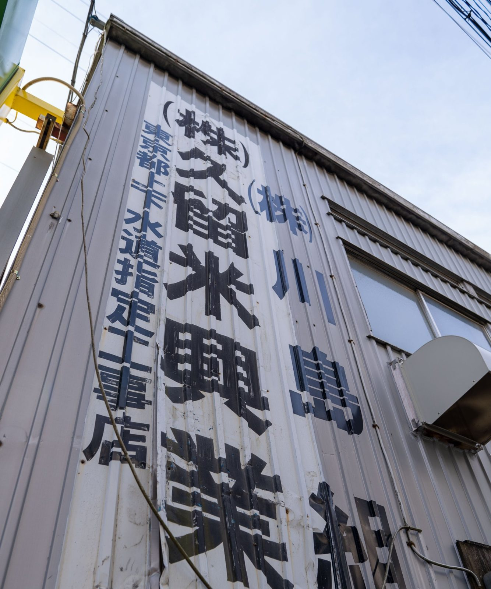
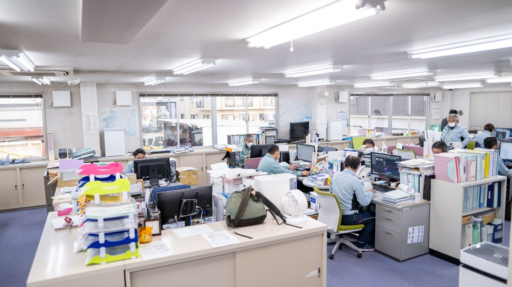
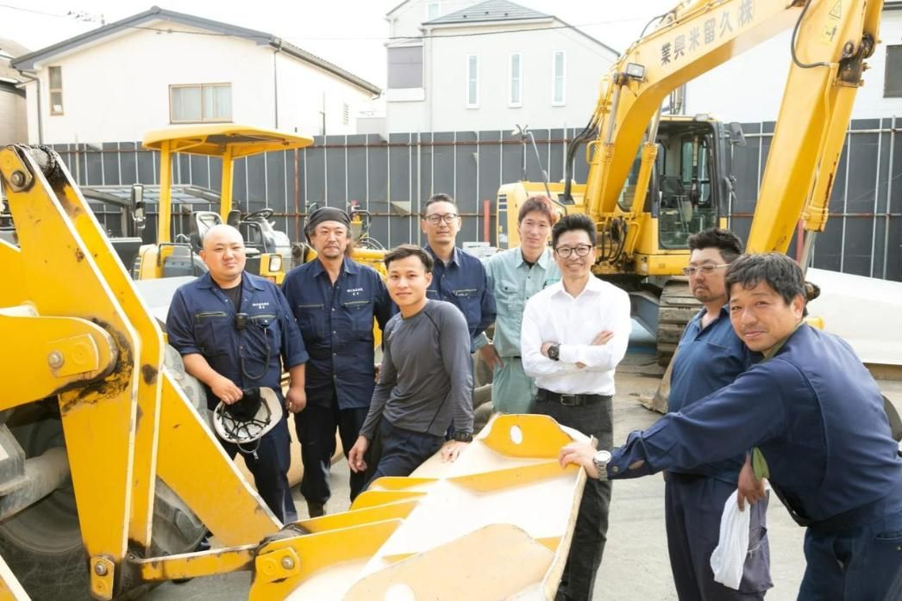

SALES
SALES FIELD
FIELD ガス管取替後の復旧舗装工事ガス管取替後の道路を舗装復旧する工事
ガス管取替後の復旧舗装工事ガス管取替後の道路を舗装復旧する工事 水道工事水道管の布設・布設替など
水道工事水道管の布設・布設替など 一般土木工事道路の維持・改良など、地域の土木工事
一般土木工事道路の維持・改良など、地域の土木工事松野さん
長年の現場経験から、役割分担と新人の成長について話しています。

この街とともに、50年以上。
道路を直し、水道を支える会社の、これから。
1974年から、世田谷の道路と水道の工事に携わってきた。
ガス管を取り替えた後の道路を、元の状態に戻す。
水道管を布設し、地域の土木を担う。
その先には、毎日この道を使う人の暮らしがある。
けれど、昔のやり方のままでは、
働く人も、仕事も守れない。
だから、勤務時間を見直し、現場の負担を分け合い、
個性を同じ型にはめない会社へ。
仕事が続くために、人が育つ会社でありたい。
守るために、変えていく。
世田谷を拠点に、道路の舗装復旧や維持、水道工事に携わってきた久留米興業。半世紀以上の歩みの先にあるのは、これからも街の暮らしを支えていくという仕事です。
久留米興業について
THE PEOPLE BEHIND CHANGE
18歳で現場に入り、24歳で一度会社を離れた川島代表。現場・管理・経営を経験し、今は働く時間や人の負担にも目を向けながら、次の世代へつながる会社づくりを考えています。
代表の歩みと想い
昔のやり方のままでは、働く人も仕事も守れない。現場を知る代表が、働き方の見直しに向き合ってきました。

定時を意識し、残業時間を管理することから働き方を見直してきました。
一人だけに無理を集中させず、人員の配置にも目を向けています。
得意なことや仕事の進め方が違っても、同じ目標へ進める関係を大切にしています。
これは代表の取り組みと方針です。現場には今も忙しい日や体力的な負担があり、その実際は採用情報の「仕事のリアル」でお伝えしています。
同じ会社でも、入社のきっかけや仕事の覚え方は人それぞれ。営業と現場、実際に働く人の経験から、久留米興業の姿を見てください。
 SALES｜根岸さん異業種から現場代理人へお茶の営業から転職し、公共工事の現場調整と資格取得へ。インタビューを読む ↗（外部サイトが開きます）
SALES｜根岸さん異業種から現場代理人へお茶の営業から転職し、公共工事の現場調整と資格取得へ。インタビューを読む ↗（外部サイトが開きます） SALES｜高畑さん新卒から営業を経験業界用語も分からない時期に先輩の支えを受け、仕事を覚えてきた。インタビューを読む ↗（外部サイトが開きます）
SALES｜高畑さん新卒から営業を経験業界用語も分からない時期に先輩の支えを受け、仕事を覚えてきた。インタビューを読む ↗（外部サイトが開きます） SALES｜今井さん広告業界から転職現場での衝突を経験し、職人との対話を通じて調整力を磨いた。インタビューを読む ↗（外部サイトが開きます）
SALES｜今井さん広告業界から転職現場での衝突を経験し、職人との対話を通じて調整力を磨いた。インタビューを読む ↗（外部サイトが開きます）長年の現場経験から、役割分担と新人の成長について話しています。
建築から土木へ。先輩に聞きながら仕事を覚え、現場の大変さも率直に話しています。

FOR THE NEXT 50 YEARS
これからも街のインフラを守っていくには、次の世代へ経験や技術を渡していく必要があります。未完成なところも見直しながら、人が長く働ける会社を目指しています。
久留米興業の未来
 道路維持工事（世田谷区上祖師谷）
道路維持工事（世田谷区上祖師谷） 地先道路築造工事（世田谷区上祖師谷）
地先道路築造工事（世田谷区上祖師谷）